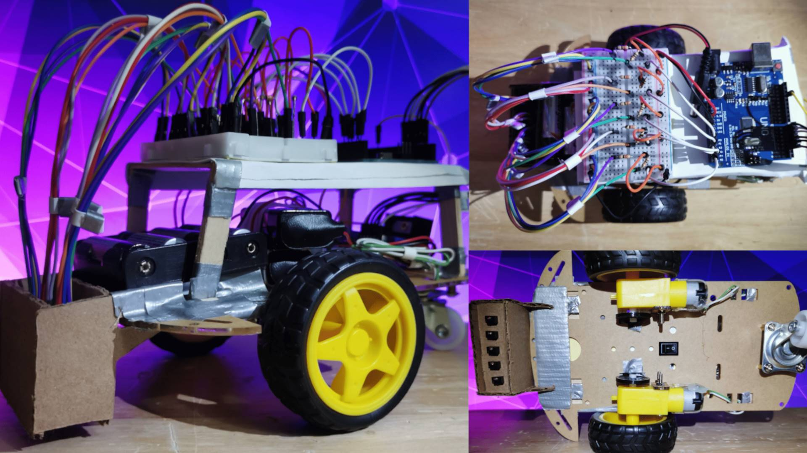
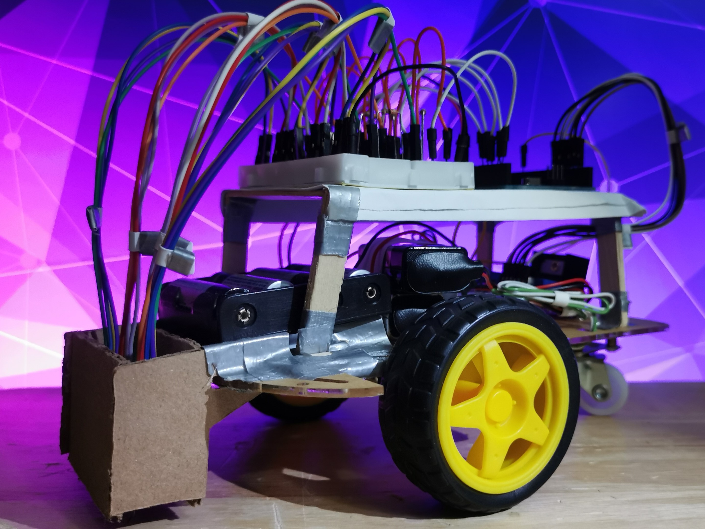
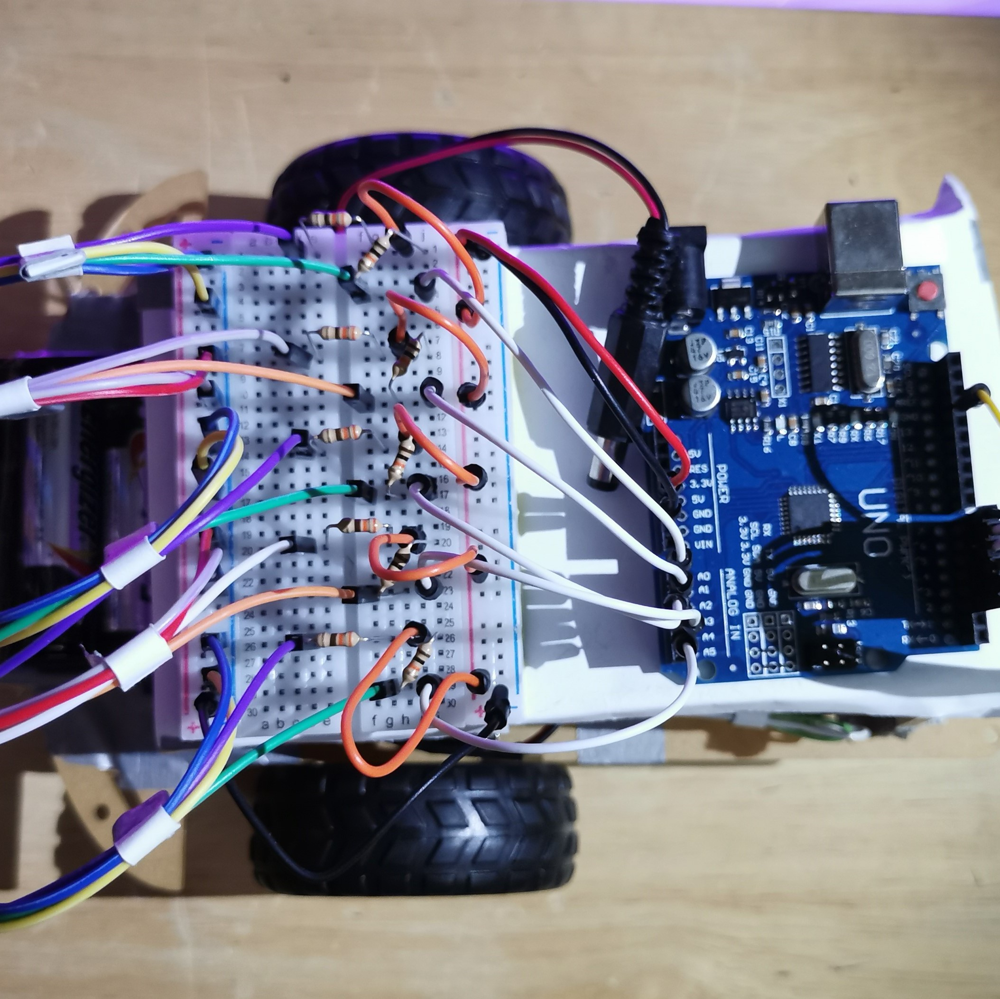
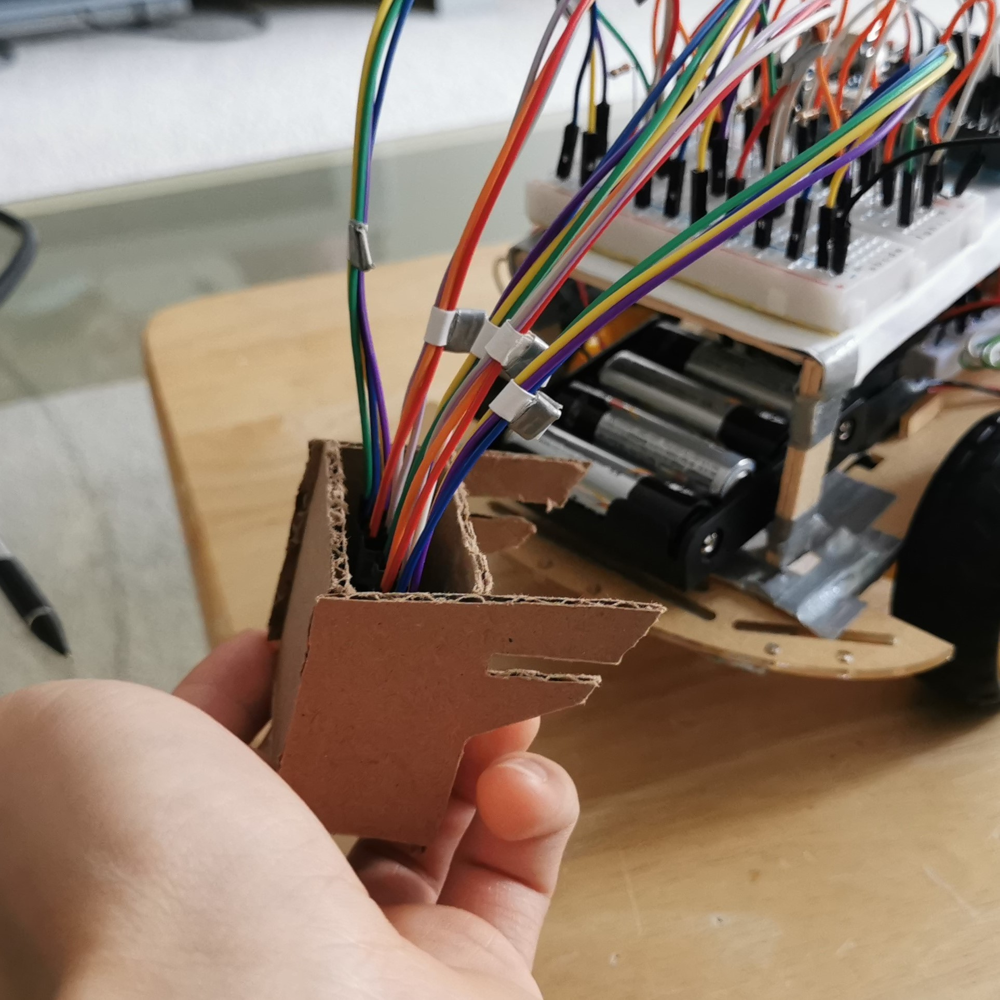
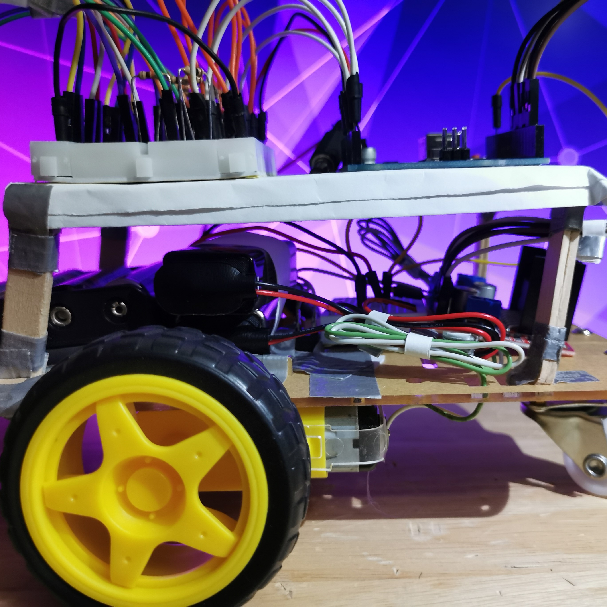

One of my beginner projects for Integrated Engineering was to create a fully autonomous robot car which could navigate a series of obstacle courses comprised of a line with junctions, gaps, and sharp corners.
- This was a class competition graded by course completion and speed, with limitations to household materials and an Arduino Uno.
Initial Design
My design choice for the robot was to make all components fit within the footprint of the motor mounting bracket. Due to the limited space, I made use of a lofted body, storing the powertrain underneath the microcontroller circuit, allowing for ease of maintenance.

Controls
To power the Arduino, a 6V battery source was used, while a separate line used two 9V batteries in parallel to provide boosted power to the motors. The motors were controlled using an L298N H-Bridge motor driver.
The line tracking was achieved using 5x QRD1114 IR sensors on a shrouded bracket, to detect the black line on white paper.

The end result was a robot which could quickly navigate around sharp corners, make judgment calls at intersections, and traverse over gaps in the track. The robot was able to navigating all 4 difficulties of available tracks in both forwards and reverse, completing them in an average of 1 minute 30 seconds.
- For the unique aesthetic and design choice, this robot has been used as a project example in the onboarding presentations for future Integrated engineering students.
